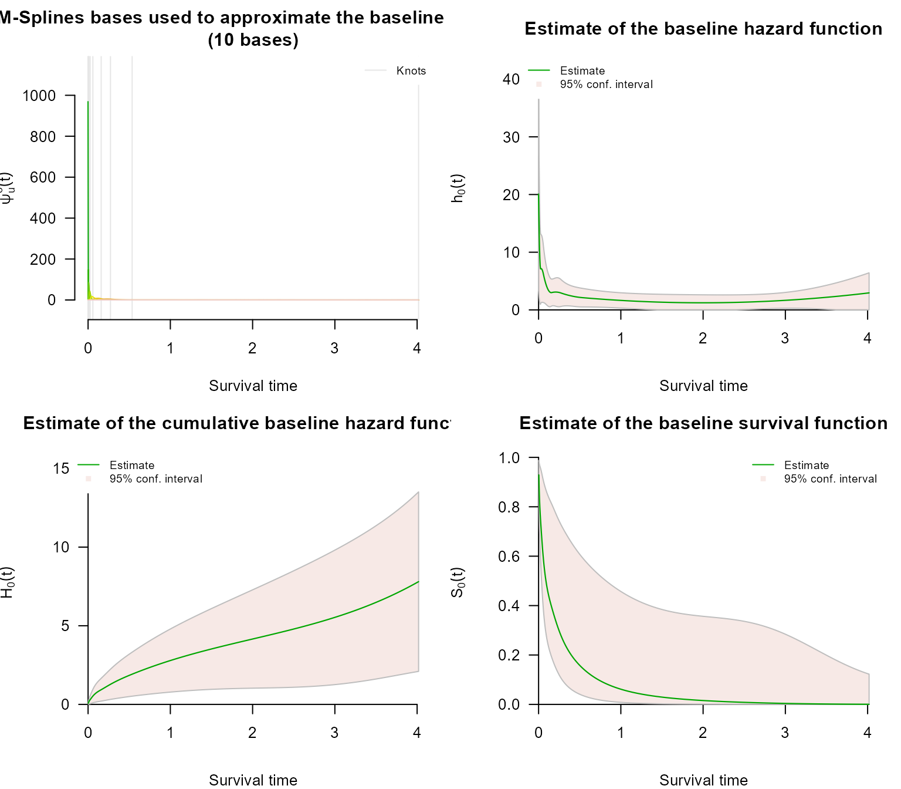
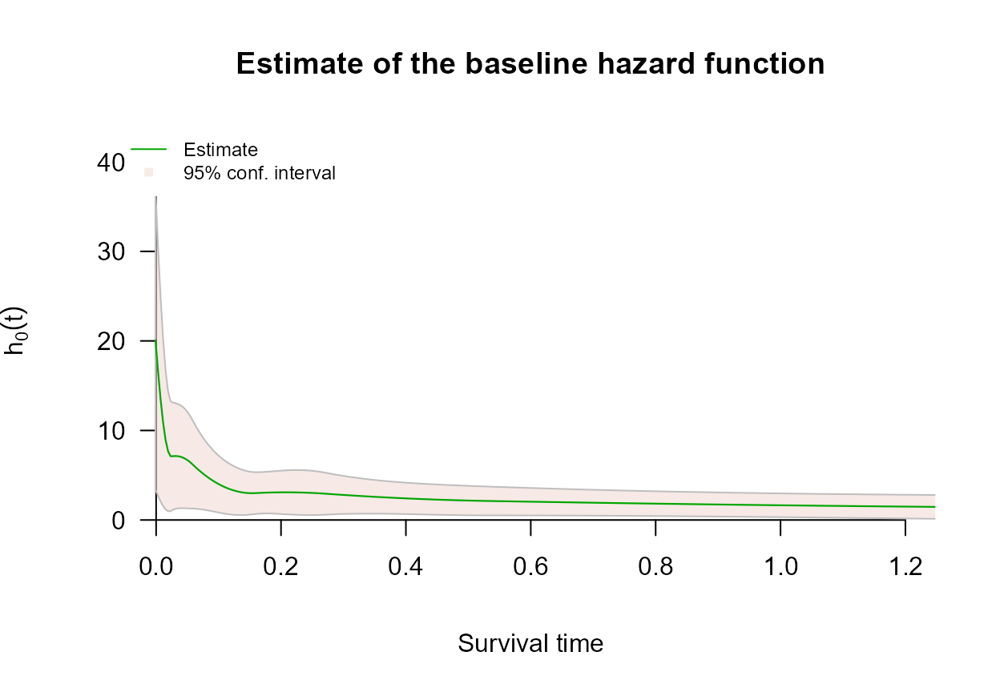
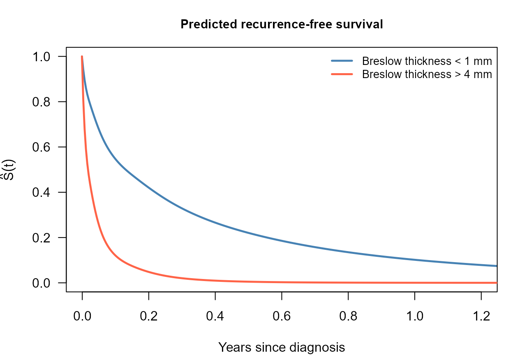

Interval Censoring with survivalMPL
interval-censoring.RmdOverview
Survival times are interval censored when the event is known to have occurred in an interval rather than at an exact time. This is the normal state of affairs in clinical studies where patients are examined only periodically: a recurrence found at a follow-up visit happened at some point since the previous visit, and nothing narrower is known.
The likelihood contribution is a difference of survivor functions,
which requires
at both endpoints and so cannot be written as a partial likelihood.
survivalMPL handles partly interval-censored data:
a dataset may mix exact event times with left-, right- and
interval-censored observations, all in one fit. The censoring type is
communicated through
survival::Surv(..., type = "interval2"), which infers it
from the pair of endpoints:
| Data | Response | Status code |
|---|---|---|
| Exact event at | Surv(t, t, type = "interval2") |
1 |
| Interval censored on | Surv(t_L, t_R, type = "interval2") |
3 |
| Left censored at | Surv(NA, t_R, type = "interval2") |
2 |
| Right censored at | Surv(t_L, NA, type = "interval2") |
0 |
melanoma stores an unknown lower endpoint as
0 rather than NA, and an unknown upper
endpoint as Inf rather than NA.
Inf is read as right censoring exactly like
NA; 0 is read as an interval starting at zero,
which is the same statement as left censoring since
makes
and
identical. The likelihood is unaffected; only the status code
Surv() reports differs.
This tutorial follows the pseudo-melanoma example of Ma et al. (2024) (Section 2.11).
The melanoma data
melanoma is a pseudo dataset of time to first local
recurrence for
melanoma patients, simulated from the design in Ma et al. (2024) with a Weibull baseline hazard
.
Recurrence times are interval censored because they are detected at
clinic visits. Covariates are the melanoma location at
first diagnosis (reference: head and neck), Breslow
thickness (reference:
mm), gender (reference: male), and centred
age in decades.
library(survivalMPL)
#> Loading required package: survival
#> Loading required package: MASS
library(survival)
data(melanoma)
str(melanoma)
#> 'data.frame': 300 obs. of 10 variables:
#> $ t_L : num 0.070765 0.314938 0.040158 0.000193 0.643887 ...
#> $ t_R : num 0.070765 0.314938 0.040158 0.000193 0.643887 ...
#> $ Arm : num 0 0 0 0 0 1 0 0 0 0 ...
#> $ Leg : num 0 0 1 1 1 0 0 0 0 1 ...
#> $ Trunk : num 0 1 0 0 0 0 1 0 1 0 ...
#> $ mm1to2 : num 0 0 1 0 0 0 1 1 0 1 ...
#> $ mm2to4 : num 0 0 0 0 0 0 0 0 0 0 ...
#> $ mm4plus : num 1 0 0 1 0 0 0 0 0 0 ...
#> $ Female : int 1 1 0 0 0 0 0 0 0 0 ...
#> $ Age_centred: num -0.3336 1.8786 0.7097 0.7263 -0.0883 ...Two thirds of the subjects have an exactly observed recurrence time; the remaining third is censored, mostly by interval censoring:
with(melanoma, c(
exact = sum(t_L == t_R & is.finite(t_R)),
interval = sum(t_L > 0 & t_L < t_R & is.finite(t_R)),
right = sum(is.infinite(t_R)),
left = sum(t_L == 0 & is.finite(t_R))
))
#> exact interval right left
#> 200 58 23 19
table(status = Surv(melanoma$t_L, melanoma$t_R, type = "interval2")[, 3])
#> status
#> 0 1 3
#> 23 200 77The status table counts 77 interval-censored observations rather than
58, because the 19 left-censored rows are stored as intervals
and Surv() reports them as such.
The recurrence times are strongly right skewed: 95% of the observed endpoints fall below one year, but a few reach four.
endpoints <- c(melanoma$t_L[melanoma$t_L > 0],
melanoma$t_R[is.finite(melanoma$t_R)])
round(quantile(endpoints, c(0.5, 0.9, 0.95, 1)), 3)
#> 50% 90% 95% 100%
#> 0.071 0.653 0.938 4.017Model fit
The call below is the one used in the book: cubic M-splines
(basis = "m") for the baseline hazard, seven quantile
knots, a convergence tolerance of
and generous iteration caps. The smoothing value is not set, which
leaves it to the automatic smoothing parameter selection the package
performs by default - the marginal likelihood method of Ma et al. (2024) (Section 2.10), which they
single out as the package’s default behaviour.
mela_fit <- coxph_mpl(
formula = Surv(t_L, t_R, type = "interval2") ~
Arm + Leg + Trunk + mm1to2 + mm2to4 + mm4plus + Female + Age_centred,
data = melanoma,
basis = "m", tol = 1e-05, n.knots = c(7, 0),
max.iter = c(1000, 5000, 1e+05)
)
summary(mela_fit)
#>
#> coxph_mpl(formula = Surv(t_L, t_R, type = "interval2") ~ Arm +
#> Leg + Trunk + mm1to2 + mm2to4 + mm4plus + Female + Age_centred,
#> data = melanoma, basis = "m", tol = 1e-05, n.knots = c(7,
#> 0), max.iter = c(1000, 5000, 1e+05))
#>
#> -----
#>
#> Cox Proportional Hazards Model Fit Using MPL
#>
#>
#> Penalized log-likelihood : 56.93461
#> Estimated smoothing value : 7.636295e-08
#> Convergence : Yes (17 + 1456 iter.)
#>
#> Data : melanoma
#> Number of obs. : 300
#> Number of events : 200 (66.66667%)
#> Number of cens. : 100 (33.33333%)
#>
#> Regression parameters : Surv(t_L, t_R, type = "interval2") ~ Arm + Leg + Trunk + mm1to2 + mm2to4 + mm4plus + Female + Age_centred
#> Estimate Std. Error z-value Pr(>|z|)
#> Arm -0.478653 0.183003 -2.6155 0.0089086 **
#> Leg -0.016230 0.174265 -0.0931 0.9257983
#> Trunk -0.215401 0.152142 -1.4158 0.1568376
#> mm1to2 -0.031239 0.176290 -0.1772 0.8593476
#> mm2to4 0.616606 0.181449 3.3982 0.0006782 ***
#> mm4plus 1.254158 0.214963 5.8343 5.402e-09 ***
#> Female -0.167439 0.127052 -1.3179 0.1875449
#> Age_centred 0.097888 0.049517 1.9769 0.0480573 *
#> ---
#> Signif. codes: 0 '***' 0.001 '**' 0.01 '*' 0.05 '.' 0.1 ' ' 1
#>
#> Baseline hasard parameters approximated using M-Splines :
#> (2 (min/max) + 7 quantile knots + 0 equally spaced knots + 3 (order) - 2 = 10 parameters)
#> 1 2 3 4 5 6
#> 2.072435e-02 7.548640e-02 1.158956e-01 1.301883e-01 3.630589e-01 2.323992e-01
#> 7 8 9 10
#> 5.112513e-01 2.932270e+00 5.372501e-10 3.423429e+00
#>
#> -----The summary reports the fit on the log-hazard-ratio scale, together with the baseline hazard coefficients and the selected smoothing value. Convergence is reached well inside the iteration caps.
Hazard ratios
The book presents the same fit as hazard ratios with confidence intervals and tests (its Table 2.6), which is the form a clinical reader expects:
b <- coef(mela_fit)
se <- mela_fit$se$Beta$M2QM2
z <- b / se
hr_tab <- data.frame(
Covariate = c("Arm", "Leg", "Trunk", "1 to 2 mm", "2 to 4 mm",
"4 mm and more", "Female", "Age (per 10 years)"),
`HR estimate` = round(exp(b), 3),
`95% CI lower` = round(exp(b - qnorm(0.975) * se), 3),
`95% CI upper` = round(exp(b + qnorm(0.975) * se), 3),
`p-value` = format.pval(2 * pnorm(-abs(z)), digits = 3, eps = 1e-4),
check.names = FALSE,
row.names = NULL
)
knitr::kable(hr_tab, align = "lrrrr")| Covariate | HR estimate | 95% CI lower | 95% CI upper | p-value |
|---|---|---|---|---|
| Arm | 0.620 | 0.433 | 0.887 | 0.008909 |
| Leg | 0.984 | 0.699 | 1.384 | 0.925798 |
| Trunk | 0.806 | 0.598 | 1.086 | 0.156838 |
| 1 to 2 mm | 0.969 | 0.686 | 1.369 | 0.859348 |
| 2 to 4 mm | 1.853 | 1.298 | 2.644 | 0.000678 |
| 4 mm and more | 3.505 | 2.300 | 5.341 | < 1e-04 |
| Female | 0.846 | 0.659 | 1.085 | 0.187545 |
| Age (per 10 years) | 1.103 | 1.001 | 1.215 | 0.048057 |
Read against the head-and-neck reference, a melanoma first diagnosed on the arm carries a significantly lower risk of recurrence, while the leg and trunk categories are not distinguishable from the reference. Breslow thickness is the dominant risk factor: relative to tumours under 1 mm, the hazard is about 1.9 times higher at 2-4 mm and 3.5 times higher above 4 mm, both with . A 10-year increase in age raises the recurrence hazard by about 10%, marginally significant here. Gender points the same way as in the book - women at lower risk - but does not reach significance in this sample.
The book’s Table 2.6 reports similar hazard ratios from its own
simulated sample, in which 37% of the recurrence times are exactly
observed. The bundled melanoma is generated with two thirds
exact events, so the point estimates are comparable but the confidence
intervals differ, and the trunk and gender effects that are borderline
in the book do not reach significance here. The coefficients used to
generate the data are documented in ?melanoma.
Baseline hazard and survival
plot() on the fitted object gives the basis functions,
the baseline hazard, the cumulative baseline hazard and the baseline
survival - the book’s Figure 2.5 is the second of these:

At baseline covariate values the estimated hazard of recurrence falls steeply and monotonically away from the origin and then flattens close to a constant, which is the behaviour the true has. The slight lift at the extreme right, past four years, rests on a handful of observations and is not supported by the confidence band.
Because the recurrence times are so skewed, everything of interest is
squeezed into the left-hand tenth of the panel. xlim
narrows the displayed range; the fit itself, and the knots, are
unchanged:

Beyond the book’s example, predict() turns the same fit
into absolute survival for a named covariate profile. Contrasting the
thinnest and thickest tumours shows the size of the thickness effect on
that scale:
i_thin <- which(melanoma$mm1to2 == 0 & melanoma$mm2to4 == 0 &
melanoma$mm4plus == 0)[1]
i_thick <- which(melanoma$mm4plus == 1)[1]
p_thin <- predict(mela_fit, type = "survival", i = i_thin)
p_thick <- predict(mela_fit, type = "survival", i = i_thick)
par(mar = c(4, 4.2, 3, 1))
plot(p_thin$time, p_thin$survival, type = "l", col = "steelblue", lwd = 2.4,
xlim = c(0, 1.2), ylim = c(0, 1), las = 1,
xlab = "Years since diagnosis", ylab = expression(hat(S)(t)),
main = "Predicted recurrence-free survival", cex.main = 0.95)
lines(p_thick$time, p_thick$survival, col = "tomato", lwd = 2.4)
legend("topright", legend = c("Breslow thickness < 1 mm", "Breslow thickness > 4 mm"),
col = c("steelblue", "tomato"), lwd = 2.4, bty = "n", cex = 0.85)
Next steps
- Left Censoring covers the boundary case of interval censoring, where the lower endpoint is unknown, on a dataset with no interval-censored observations at all.
-
Right Censoring covers the standard scheme and the
Surv(time, status)response. -
Control Parameters explains
basis,n.knots,tolandmax.iter, the settings the fit above changes from their defaults. -
Basis Functions for the Baseline Hazard explains
the four choices for
,
including the
"msplines"basis used above.